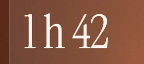
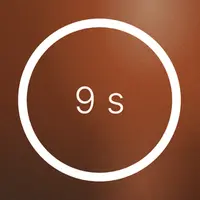
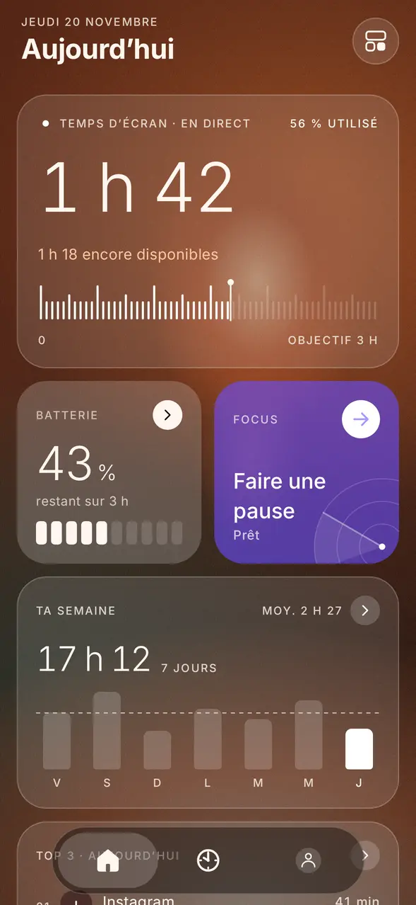
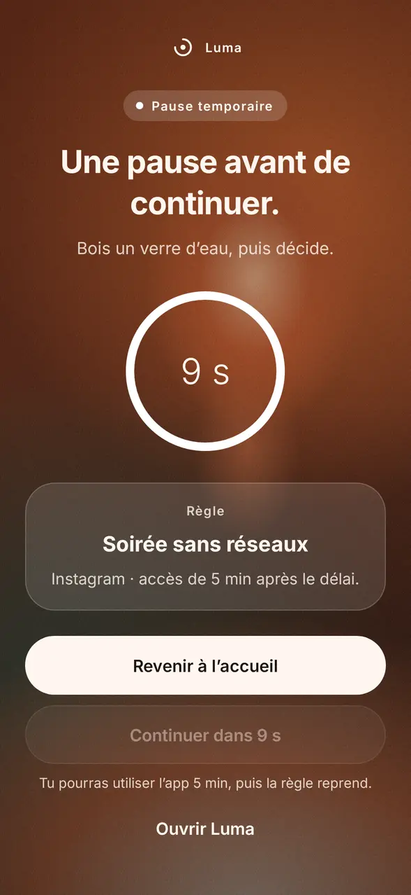
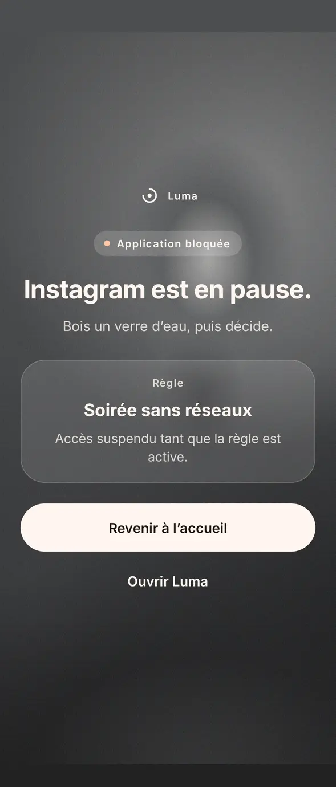
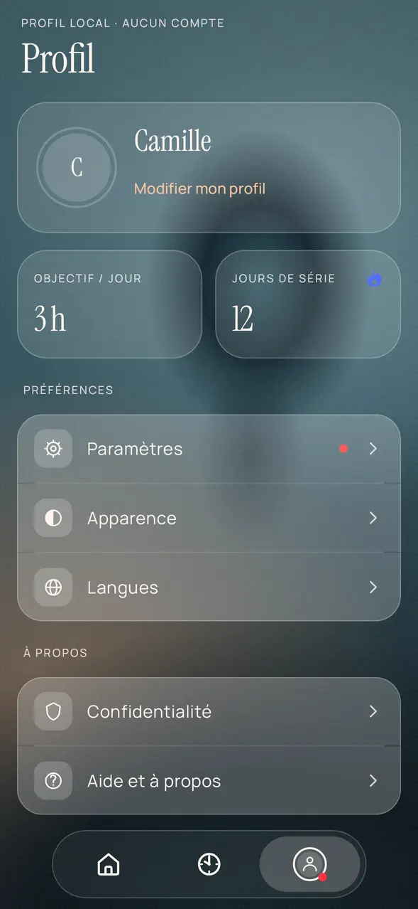
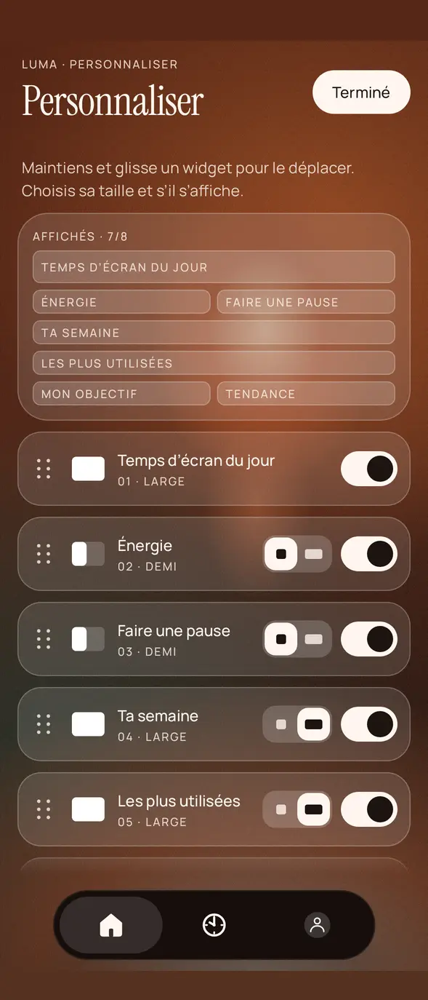
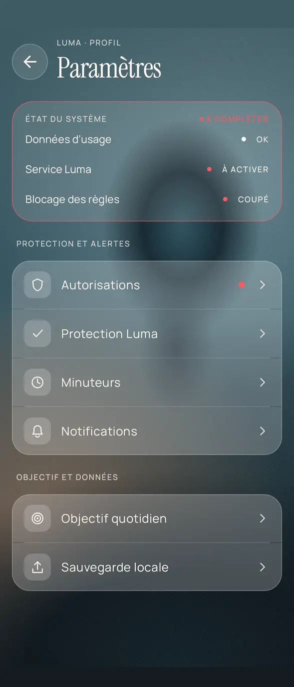
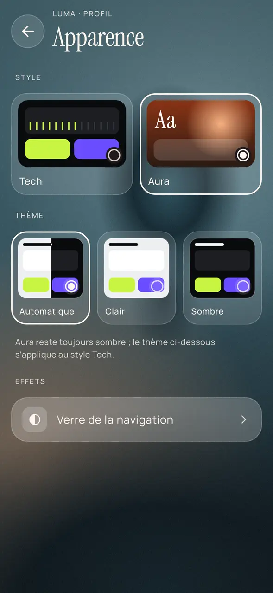

Application Android · 100 % locale
Le temps 
qu’il te reste, c’est toi 
qui le décides.
Luma mesure ton vrai temps d’écran et t’aide à le reprendre en main, avec douceur ou avec fermeté.

La plupart des apps affichent des statistiques, puis s’arrêtent là. Luma intervient au bon moment, sans compte, sans serveur, sans rien te prendre.
Trois façons d’intervenir
Une limite qui tient, sans punir.
Crée une règle pour les apps qui posent problème, puis choisis comment Luma réagit.
Un rappel.
Une notification quand tu approches de ta limite. Rien n’est bloqué, tu gardes simplement un œil sur ton temps.
Une pause.
Quelques secondes pour respirer, puis un bouton « Continuer » qui ouvre l’app pour 5 minutes. Le temps de se demander si on en a vraiment envie.
Un blocage.
L’app reste fermée tant que la règle s’applique. Trois exceptions par jour, pour souffler quand il le faut.



Règles & Focus
Des règles à ton rythme.
Focus
Faire une pause.
Lance une session depuis l’accueil, la tuile rapide ou le widget. En mode strict, impossible de l’arrêter avant la fin.
Le téléphone, les messages, l’appareil photo et les alarmes ne sont jamais bloqués.

Aura
Une lumière pour chaque moment.
Cuivre pour l’accueil, gris pour les règles, violet pour le Focus, bleu-vert pour le profil. Et si tu préfères un tableau de bord net, le style Tech est à un geste.




Confidentialité
Rien ne quitte ton téléphone.
Les calculs se font sur l’appareil. Luma ne lit pas le contenu de ton écran : elle sait seulement quelle app est ouverte.
- 0compte
- 0serveur
- 0pub
- 0traceur
Questions
Bon à savoir.
Quand Luma sera-t-elle disponible ?
Luma se prépare pour Google Play. Les derniers essais de la protection sur plusieurs téléphones sont en cours.
Sur quels téléphones ?
Sur Android 7.0 et plus récent, jusqu’à Android 17. L’app pèse environ 2,4 Mo.
Pourquoi le service d’accessibilité ?
C’est le seul moyen, sur Android, de savoir quelle app passe au premier plan pour appliquer une règle au bon moment. Luma ne lit ni le texte ni le contenu de l’écran.
Et si j’ai vraiment besoin d’une app bloquée ?
Tu peux ajouter une exception temporaire, trois fois par jour, ou modifier ta règle à tout moment. Les minuteurs ajoutent juste un petit délai pour que céder reste un choix.
Bientôt sur Google Play
Reprends la main sur ton temps d’écran.
Suis le projet pour être prévenu de la sortie.